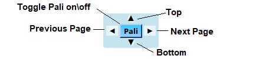
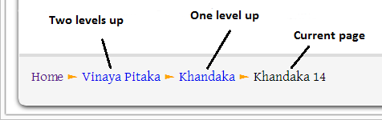
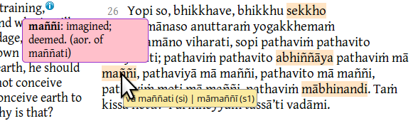
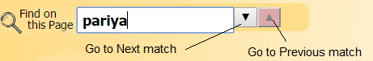
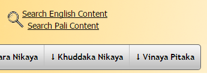

The True Dhamma
These translations are designed to preserve the right meaning and phrasing (sātthaṁ sabyañjanaṁ) as much as possible, in hopes that it will reveal the life of purity that is utterly perfect and pure to the disciple who practices accordingly, as expected of the Dhamma that is good in the beginning, good in the middle and good in the end, with the right meaning and phrasing. However, the reader is forewarned that even with these best efforts for translation fidelity, some loss of phrasing and resulting loss in meaning is unavoidable due to English language limitations. The serious disciple is therefore advised to become familiar enough with the original Pali texts to enable cross-checking these translations with the Pali to avoid being misled. This website framework (designed by the The Buddha's Words team) makes such cross-checking easily accessible with side-by-side Pali and English renderings, and built-in Pali dictionary and Pali/English search capabilities for referencing other suttas with similar phrasing.
The Control Panel
The control panel widget that appears on the right hand side of the screen provides navigation between previous and next pages and between the top and bottom of the page.
The - and + symbols decrease and increase the font size.
The Pali button appears wherever a Pali version is present (not all pages have a Pali translation). Clicking the Pali button toggles Pali on. Pali stays turned on until the button is clicked again.
With Pali showing, hovering the cursor over a Pali word gives you the English translation of available words.

Navigation Around The Site
Use the navigation at the top of the page to navigate to other pages.
Alternatively, the “breadcrumbs” at the bottom of each page contain clickable links to take you to the top of the current level, the top of the next higher level etc. or to this page. The last entry in the breadcrumbs is the current page.

Comments (Footnotes)
In the English text, hovering the cursor over an information icon ( Comments or footnotes appear in a pop-up box. ) shows the comment or footnote in a pop up text box. Move the cursor away to close the pop-up box.
Pali Text
The Pali text contains a built-in Pali-English dictionary. Hint: move the cursor downwards to select the word; the definition pops up.
Some of the Pali text is highlighted with a beige background to indicate variant Pali readings. Hovering the cursor over Pali text causes a popup as a standard tooltip.

Search on Current Page
The Find on this Page search box at the top of the screen allows you to search for text on the current page. It “follows you” as you scroll down the page. If Pali is toggled on when searching, both Pali and English matches are highlighted. Use the next and previous buttons to move between matches. Note that the search function does not operate until at least three characters are entered.
Pali searches ignore diacriticals. e.g. to find the word “pariyādāya” simply enter “pariya ..” (or even “par” to find matches). Clicking in the search box clears the previous search.

Search Entire Site
To search the English Content of the entire site, click on the Search English Content link in the header of each page.
To search the Pali Content of the entire site, click on the Search Pali Content link in the header of each page.
Please be warned that the first time either of the search pages is opened may take a while to load … after that it’s fine.

The search results will be displayed in hyperlinks that will take you to the relevant page but not to the exact location on the page. (Hint: Use right click | Open in new tab if you want to keep the results displayed) You will have to use Search on Current Page (as above) until a future iteration of this work integrates the two types of searches.
Versions of these pages …
These pages are updated regularly to add content, fix mistakes and to make improvements. At this time the Pali is not completely aligned with the English in the Vinaya Pitika and elsewhere.
Where the reader is directed to another sutta to read a similar block of ellided text, the original text is being reinstated. This process also continues …
As Ajahn Brahmali’s translations of the Vinaya become available and, as time allows, his translations are replacing the I.B Horner translations.
For consistency, paragraph numbering is gradually being changed so that the english paragraph numbering follows the pali paragraph numbering. This process is also ongoing.
Last updated 7th February 2018.